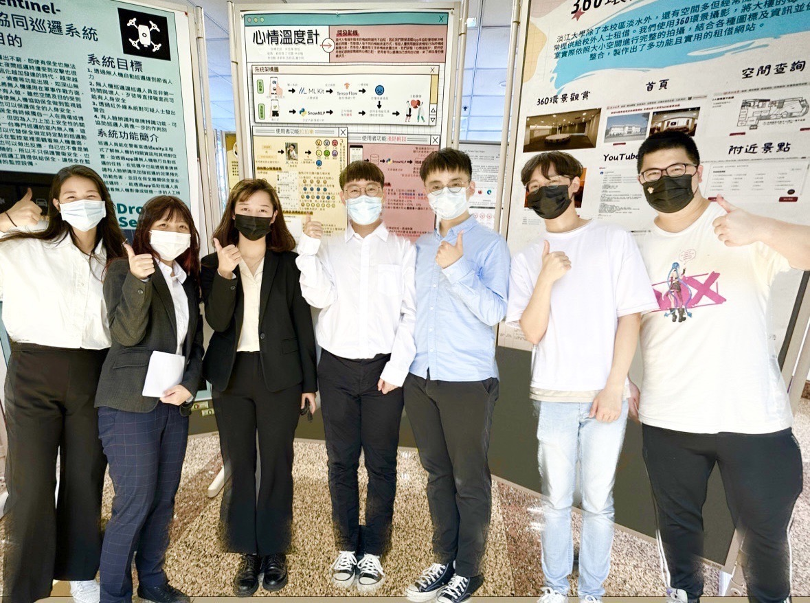
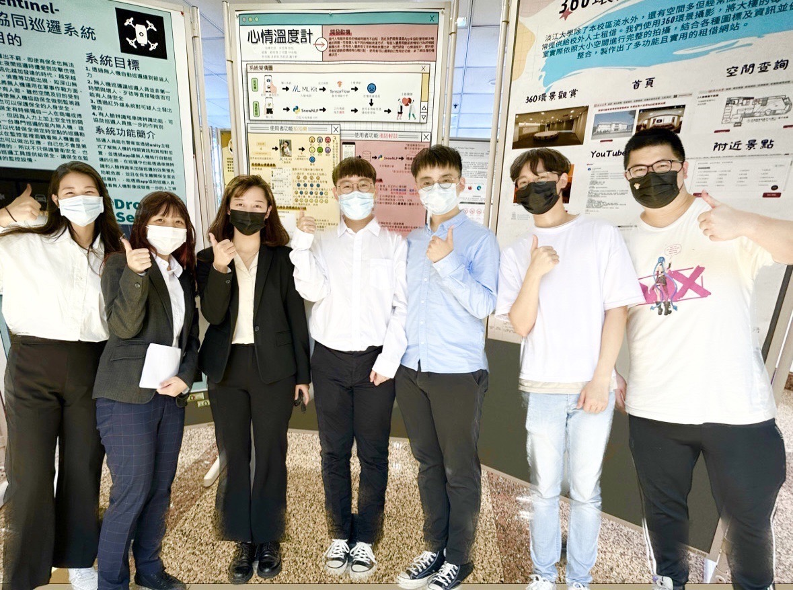
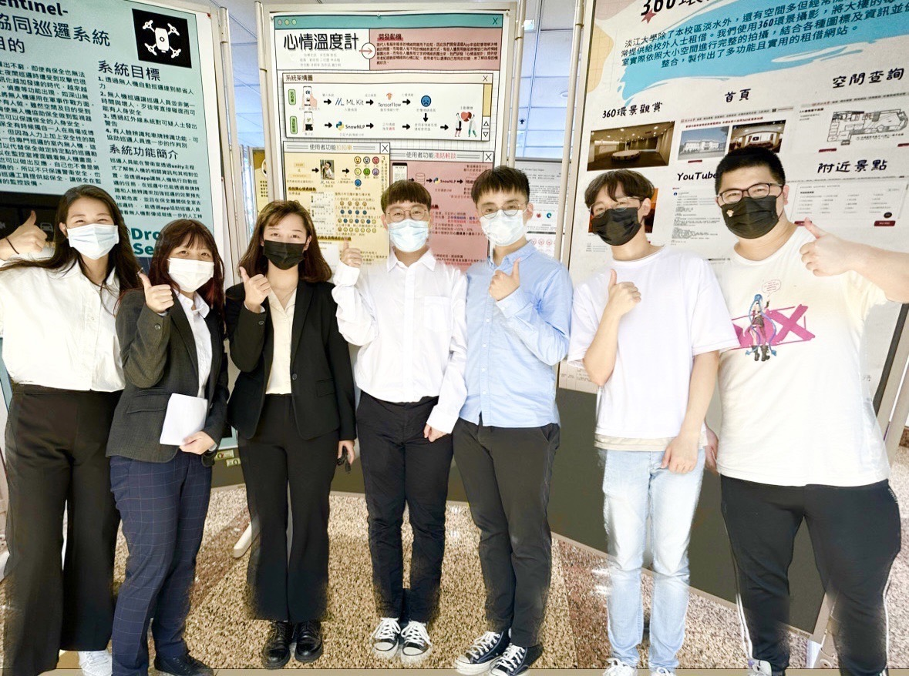

自製網頁程式設計
響應式網頁製作
我的vercel連結
我的github連結
我的名片
Introduction
基本資料
關於我
- 姓名：劉筱薇
- 畢業學校：淡江大學資管系
- 我的規劃：大學畢業後升學研讀研究所
- 我未來所期許的職業：進入科技業
我的興趣
- 運動：打排球、打羽毛球、游泳
- 看電影：喜歡古裝劇
- 學習新知：對於有興趣的新知識充滿熱情
我曾學過的程式語言
- JAVA程式設計與資料結構
- 基礎Python語言
- 一些資料交換語言：例如XML...
- 網頁：HTML、CSS、JAVAScripts
- JAVAFX
- 目前正在學習：C/C++
我在資管系修習與資訊有關的修課紀錄
- 基礎程式設計：4學分
- JAVA程式設計與資料結構：6學分
- 進階程式設計：4學分
- 網路程式設計：3學分
- 網頁程式設計：2學分
- 作業系統與實務：4學分
- Linux作業系統：3學分
- 演算法：3學分
- 人工智慧：3學分
- 基礎Python語言(計算機概論):4學分
- 資料交換語言：3學分
- 網路與通訊實務：必修+選修總共6學分
- 資料庫設計：3學分
- 系統分析與設計:3學分
- 資訊管理導論:2學分
- office證照實務:2學分
關於我的網頁程式設計相關作業
about me
我的自傳
我是淡江大學資管系劉筱薇。在這裡，我奠定了許多的知識基礎與待人處事態度。
求學期間，我在學校的資訊處擔任幫忙，擔任協助同學處理與解決電腦與硬體上的相關問題，除了做好學生的本分讀書求學之外，我還積極的參加各種系上及校內的活動，像是加入系上的排球隊，參加大型盃賽，期望自己可以不受侷限，能在課業以外學到更多。
我的專題
我是組長，負責整個專題的功能設計、與UI設計，並擔任組內教學者，規劃專題時程以利專題完成
專題內容：使用AI套件，應用於心情紀錄，包含人臉偵測與心情辨識及自然語言處理；利用AI將使用者抽象的心情量化成數值，並搭配管理系統的警示功能，預防憂鬱症
使用套件：ML kit、TensorFlow Lite、SnowNLP
我的畢業專題
在團隊中，我擔任組長的角色，負責整個專題的功能設計、與整個專題的介面設計，並擔任組內教學者，規劃專題時程以利專題完成。
我負責的內容： 專題初期開發：我負責整個專題的初期開發，包含專題的第一個版本、功能、介面由我這裡產出
以雛型法(Prototyping)的方式快速開發，透過跟老師及組員討論內容，一版一版的改良、修改開發方向與主題，確定內容之後，再將後端(資料庫)要連結的部分分工下去給組員。 專題介面：我負責整個專題的介面設計 (如下圖)，我先用android studio開發簡易版的頁面，待功能開發的差不多之後，利用figma優化整體介面，提高使用者體驗，同時也有利於專題競賽。
專題時程調配：我們這組有7個人，因為是多人開發一個專題，在分工上比較分散，時間也比較難掌控，由於每個人自學的程度與處理專題的時間不同，所以身為組長的我負責管理每個人每次應該要呈現出的內容
組內教學者：我是組內第一位接觸專題所有功能的人，對每個功能都有初步的了解，在每次開會過後，會擔任教學者，跟幾位同學一起開android studio開發讀書會，也會租借校內圖書館的討論室進行教學討論。
上台報告：專題-心情溫度計，最後以校內第4名獲獎落幕。
由於功能與開發主要是由我提出功能與方向和組員討論，算是最了解本專題的人，所以報告的內容PPT以及文書檔案呈現是我負責的。
專題內容：
專題名稱：心情溫度計
本專題 利用tensorflow將人類臉部表現的心情，量化成數值，再利用snowNLP分析的日記情緒，搭配 管理系統的警示功能，當使用者心情低落到一定程度時，對管理端發出警示通知，做到 預防憂鬱症的效果。
將AI套件，應用於心情紀錄，包含人臉偵測、人臉情緒辨識及自然語言處理。 專題圖解說明
專題組員

專題圖解說明
專題組員

我負責的內容：
以雛型法(Prototyping)的方式快速開發，透過跟老師及組員討論內容，一版一版的改良、修改開發方向與主題，確定內容之後，再將後端(資料庫)要連結的部分分工下去給組員。
由於功能與開發主要是由我提出功能與方向和組員討論，算是最了解本專題的人，所以報告的內容PPT以及文書檔案呈現是我負責的。
專題內容：
專題名稱：心情溫度計
本專題 利用tensorflow將人類臉部表現的心情，量化成數值，再利用snowNLP分析的日記情緒，搭配 管理系統的警示功能，當使用者心情低落到一定程度時，對管理端發出警示通知，做到 預防憂鬱症的效果。
將AI套件，應用於心情紀錄，包含人臉偵測、人臉情緒辨識及自然語言處理。
使用套件：ML kit(臉部偵測)、TensorFlow Lite(情緒辨識)、SnowNLP(自然語言處理)
專題介面圖示(有些手機無法顯示，可以用電腦網頁看)
專題圖解說明
專題組員

↓↓↓↓轉題內容可以點這邊的按鈕看得更清楚↓↓↓
我的自己設計的小專題
Java程式設計
Java程式設計期末專題製作小遊戲：在進階程式設計的課程中製作了一個打磚塊的小遊戲，更加熟悉Java與法以及物件導向、JavaFX的應用
網路程式設計
網路程式是設計期末專題：利用flask開發簡易的購物車專題，熟悉python語法與使用，理解資料庫的運作
此次作業中我的程式架構與一些註解

我的課外活動
淡江大學資管企業徵才活動 2022年及2021都有參加企業徵才，目前應徵做雲端科技公司準備實習
淡江大學資管系老人盃 2022年1月9日參加淡江大學資管系系友盃賽
不僅可以跟畢業學長姐交流，更可以透過學長姐經驗分享關於業界的想法，會想要考取研究所也有一部分是受到學長姐們的鼓勵。

淡江大學資管系女排北資盃 全台灣北區的資訊科系女排比賽，不僅可以互相交流運動，更可以擴展系上人脈。

淡江大學校女排 加入淡江校女排是我曾經的夢想，但奈何身高太矮了~最後每有加入，但有和他們一起參加運動會、被邀請打院際盃，對我來說，某種程度上也算是是他們的一份子！

教育部新世紀領導人培訓營回饋 高中時期，教育部選拔出每一區的優秀高中生進入的營隊進行培訓，有三個時期的篩選階段，我有幸能通過一次次挑戰參加到第三期。
營隊結束過後，回去營隊當志工服務其他人，服務與被服務都讓我感到覺得充實！

about me
我的興趣是打球，平常喜歡四處遊玩，特別喜歡一個人逛街的時候，因為那讓我感到毫無壓力


我的生日是12月29日，摩羯座
喜歡出去玩


thanks
謝謝你的觀看